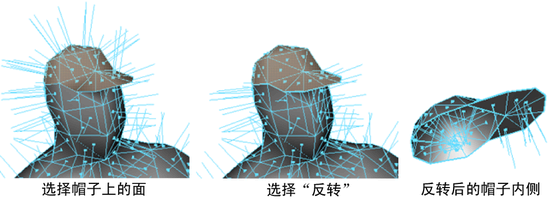
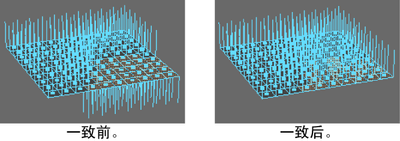

在多边形面上反转面法线，将在面的“前”和“后”朝向方向之间切换。顶点法线通常从面法线进行计算，所以也会受到影响。

反转面法线
- 选择要反转的面：
- 在“建模”(Modeling)
菜单集中选择“网格显示 > 反转”(Mesh Display > Reverse) >
 。
。
- 将“在以下项上反转法线”(Reverse normals on)选项设置为以下项之一：
- 若要反转选定面的面法线，请选择“选定面”(Selected faces)。
- 若要反转面法线和顶点法线，然后提取顶点，请选择“选定面然后提取”(Selected faces then extract)。
- 若要反转壳中所有（选定或未选定）面的面法线，请选择“壳中的所有面”(All faces in the shell)。
- 单击“反转法线”(Reverse Normals)。
注： “选定面”(Selected faces)选项可能会造成非流形几何体，此时多边形共享一条边但具有反转的法线。某些工具对非流形几何体不起作用。请参见清理、简化或验证网格。
若要避免非流形几何体的创建，请使用“选定面”(Selected faces)然后提取”选项。该选项将分割顶点，因此不会创建出非流形几何体。
将所有法线翻转到同侧
- 选择面。
- 选择“网格显示 > 一致”(Mesh Display > Conform)。
翻转到一侧的法线由所有面中的大部分面共享。
